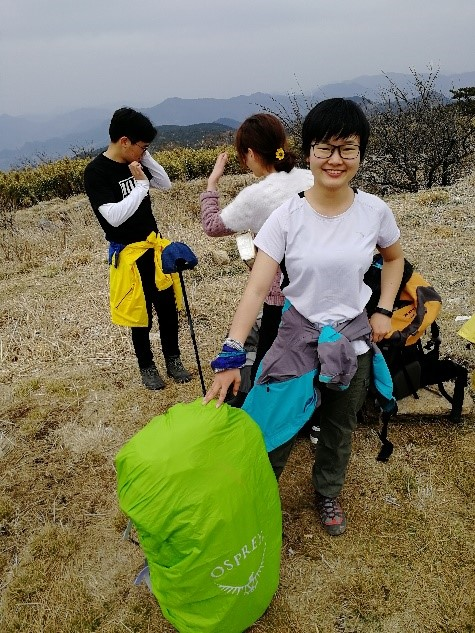

[转寄/推荐][转贴][删除][修改][设置可RE属性][上一篇][返回讨论区][下一篇][回文章][同主题列表][同主题阅读][从这里展开]
发信人: primrose (Primrose), 信区: outdoor
标 题: 【团爆】装备部~
发信站: 饮水思源 (2018年09月23日09:54:47 星期天)
部长：张雨欣
野协第一菜狗子（野协第一软妹，野协富婆，张船长.etc，可K歌，可尬舞，可跑圈，
可秋昆（？））。大一进的协会，现任装备部部长。同时常在攀岩队活动，又兼任岩队最
低水平。出了那么多次线之后的愿望就是——负重小于10kg，一定要一跤也不摔地走完一
条线（屁股不着地不算摔跤）。
背着自己的老婆出线的感觉真是棒棒哒！希望还能背小老婆走一次线啦！
变强！变强才是最大的目标。
 screen.width - 200){this.width = screen.width - 200}">
|
[转寄/推荐][转贴][删除][修改][设置可RE属性][上一篇][返回讨论区][下一篇][回文章][同主题列表][同主题阅读][从这里展开]